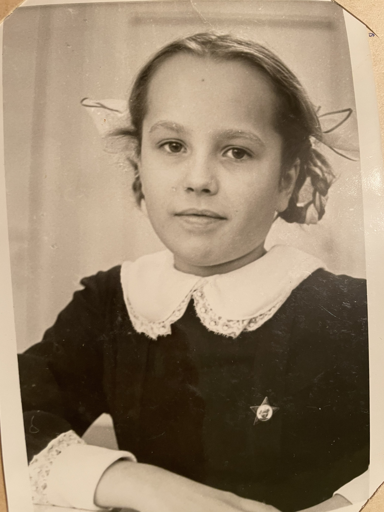
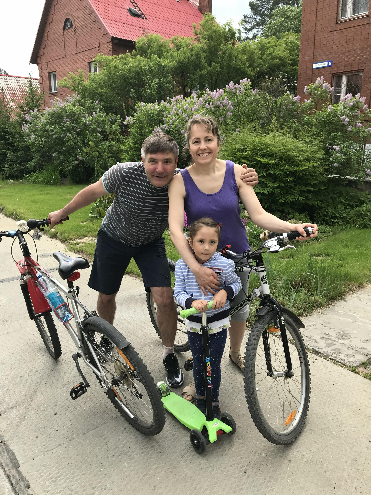
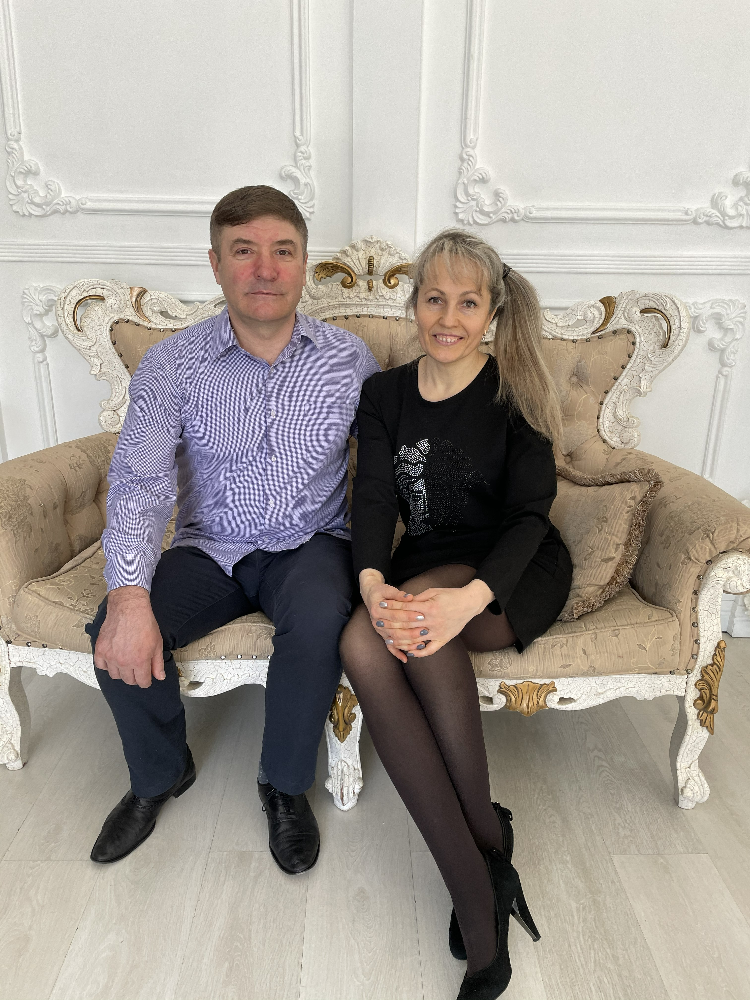
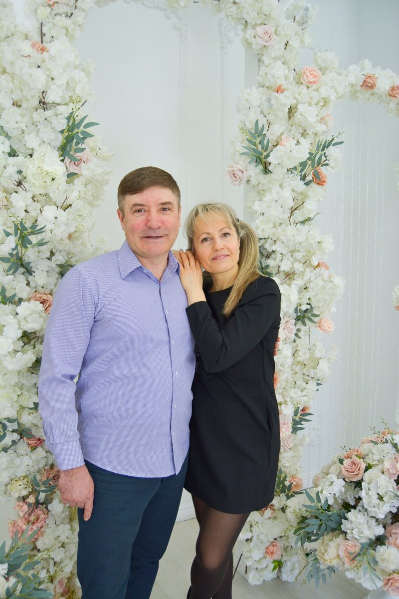
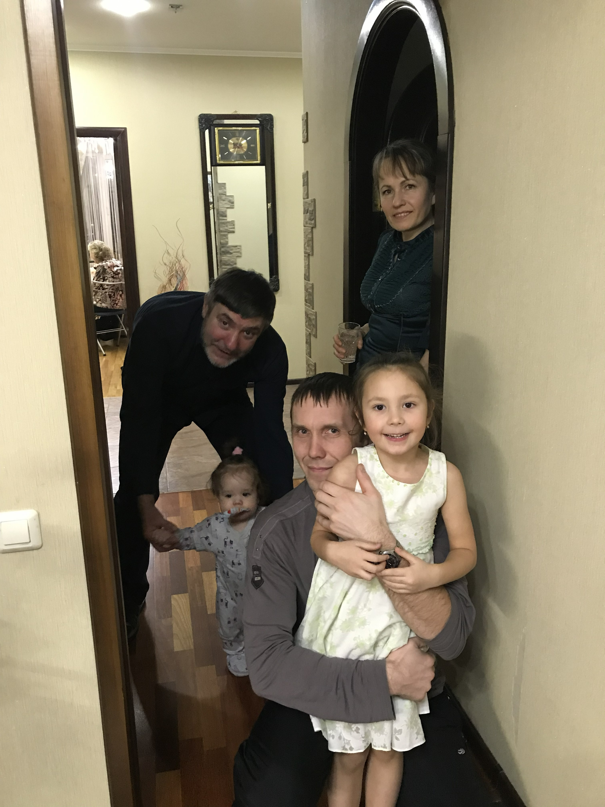
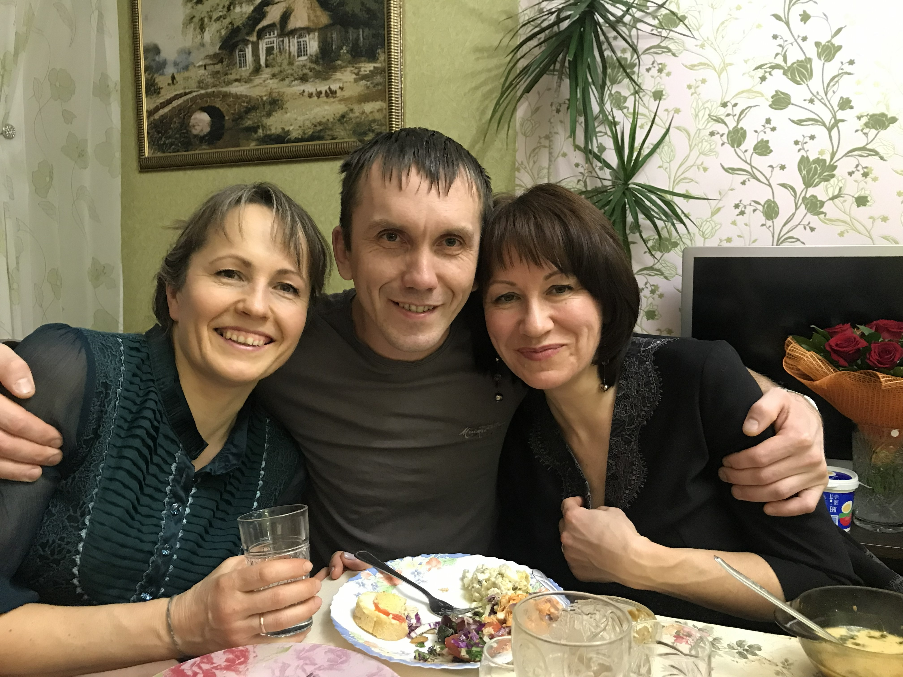
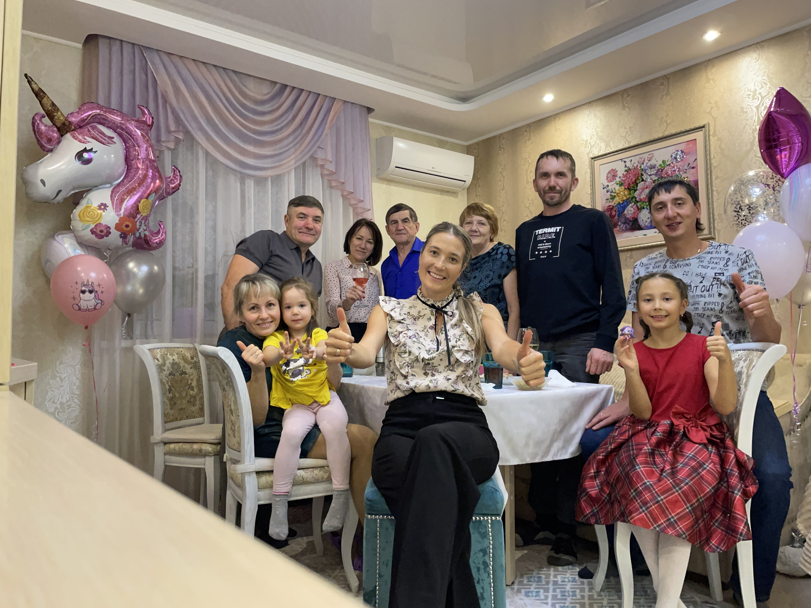
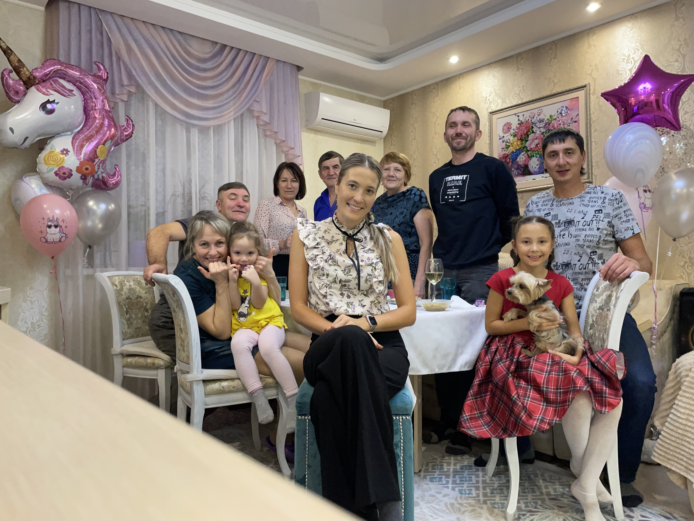
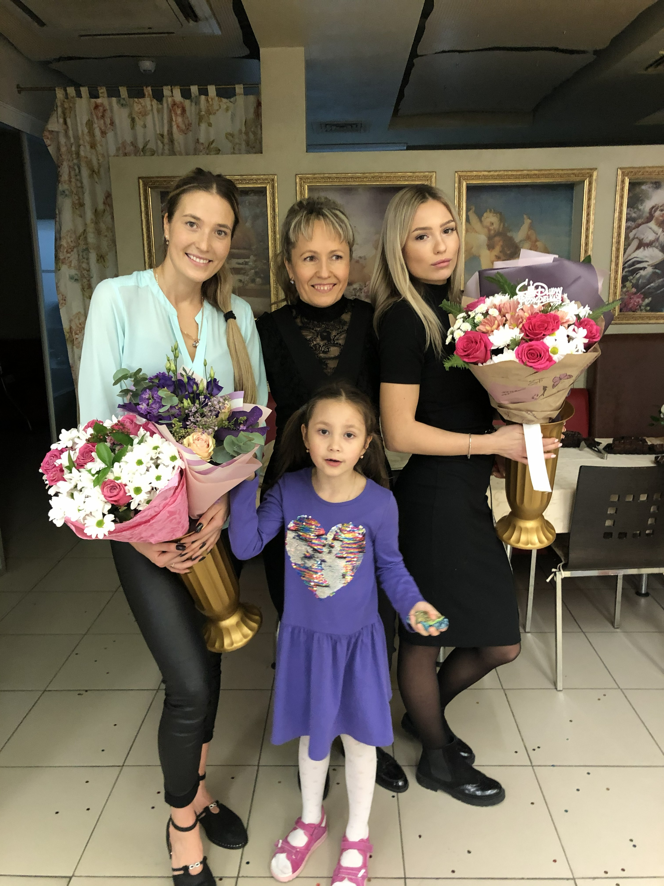
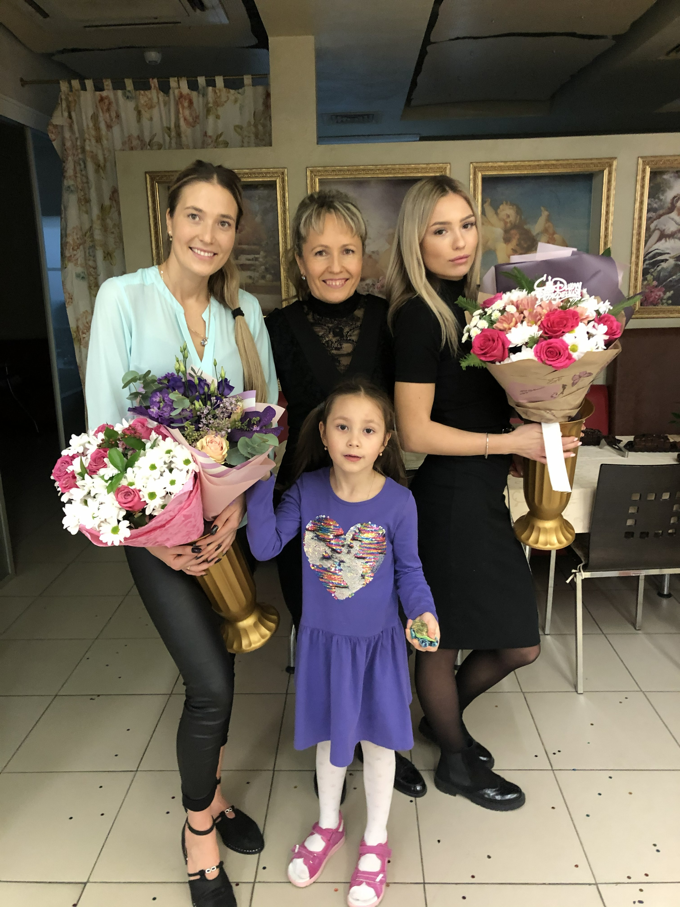

Детство и юность
Анна Владимировна родилась 9 февраля 1970 года в крепкой, полной семье, где с самого детства она была окружена заботой и вниманием. Она росла в дружной семье, рядом были старшая сестра Марина и младший брат Василий. С юных лет в ней проявлялись удивительная энергия, целеустремленность и жажда жизни.

Окончив школу, большую часть времени она посвящала спорту, выбрав красивый и сильный вид — биатлон. Эта дисциплина закалила её характер, научила идти к своей цели и не сдаваться перед трудностями.

Семья и любовь
Свою собственную семью Анна создала рано, выйдя замуж в 18 лет. В 20 лет она познала великое счастье материнства, подарив жизнь старшей дочери Виктории, а позже в их доме появилась долгожданная младшенькая — Алиса.

Дом Анны Владимировны был настоящим очагом. Он был окутан безусловной любовью, нежной заботой и тем самым семейным теплом, которое согревает душу на протяжении всей жизни. Их семейная жизнь была похожа на красивую, добрую сказку, ставшую мечтой для многих, светлым примером и картинкой идеального счастья. Они прожили долгие и счастливые 33 года вместе.
Память хранит бесценные моменты их единения: многочисленные поездки на Алтай, где семья ночевала в палатках под звездным небом. Вечерние костры, треск горящих веток, душевные и такие теплые разговоры до утра — всё это создавало неповторимую атмосферу. А совместные поездки в Шерегеш, снег, скорость, смех и незабываемые эмоции от катания на лыжах навсегда остались в сердцах родных.
Самое тёплое слово — Мама
Мама… Самое тёплое и родное слово на земле.
Анна Владимировна была человеком с огромным, обжигающим сердцем. В ней было столько понимания, желания быть рядом и поддержать в любую минуту. Она любила своих дочерей просто так, безусловно, принимая их со всеми плюсами и минусами, без условий и оговорок. Очень сильно обожала своих внучек Ангелину и Софиюшку. Дарила им всю себя, отдавая каждый кусочек сердца…

Она была удивительной. Искренне доброжелательная ко всем, она всегда находила время выслушать, утешить, протянуть руку помощи. В ней было бесконечное желание делать этот мир и жизни окружающих чуточку светлее, и этого качества в ней было так много! Анна Владимировна оставалась спортсменкой в душе и в деле: она была волонтером, сдала нормы ГТО на золото, доказывая, что сильный дух не знает преград. Она безумно любила детей, души не чаяла в своих внучках и всей душой была предана своему мужу.
Светлая память
Но порой судьба распоряжается так, что мы не в силах это понять или изменить. Всё оборвалось в один миг. Когда не стало её мамы, бабушки девочек, сердце Анны Владимировны не выдержало боли утраты. Она горевала, не могла справиться с этим горем, хотя внутри неё всё ещё билось желание жить.
Спустя всего четыре месяца, внезапно и резко, не стало и нашей мамочки. Бог забрал её к себе. Забрал ту, которая так много любила, так верно хранила свой очаг и так искренне верила в добро.

В каждом тёплом воспоминании, в свете вечернего костра, в снежной белизне горных склонов и в тихих семейных разговорах. Она была и всегда будет нашим самым главным примером любви, света и бесконечной доброты.
Фотографии
Нажмите на фото, чтобы открыть его полностью





